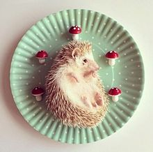

私の修行場所
-
初めまして。ここでは私が通信教育のカリキュラムにて作成したWebアプリケーションを公開しています。
勉強の成果を少しでも形にしていきたいと思っています。
-
まだまだCSSやbootstrapなどデザインに関して苦手なところがありますが頑張っていきます。
-
できればJavaScript、jQuery、CGI、Ajax、SQLなどなど他にもいろいろと勉強したいです。
自己紹介
Shimon Hattori
| No. |
項目 |
内容 |
| 1 |
名前 |
服部 史門 |
| 2 |
性別 |
男 |
| 3 |
住処 |
日本 兵庫県 |
| 4 |
GitHub |
ユーザーページ |
| 5 |
コメント |
プログラミングは好きです。苦手ですが。。。ブラインドタッチにも慣れると良いなと思っています。 |
自作Webアプリ
以下に作成したWebアプリケーションを公開します。
メッセージボード
（仮説明）メッセージアプリを作りました。おしゃべりができます。
Twitterクローン
（仮説明）Twitterみたいなアプリを作りました。
モノリスト
（仮説明）Amazonみたいなアプリを作りました。
DEMODAY用
（仮説明）集大成となるアプリを作りました。
